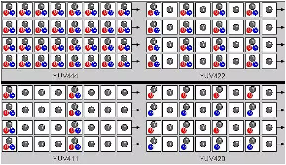

音视频基础¶
图像基础¶
一幅图像往往是一个二维的矩阵块，有宽度和高度。在计算机的世界中，图像由一个个的点组成，这个点被称为像素(pixel)。如常见的 1920 x 1080 的图像，它的像素点有 1920 x 1080 个。如果是 RGB 色彩的图像，那么每个颜色的分量就称为一个通道(channel)。通常每个像素的每种颜色用1字节(8位)来表示，那么一个像素就有3个字节。
为了描述"透明"的图像，在每个像素上新增一个透明度的分量，称为 Alpha 通道，占1个字节，可以表示256种不同的透明度。这种色彩空间被称为RGBA，这种空间一个像素需要占4个字节。
视频是利用人眼视觉暂留的原理，通过播放一帧一帧的图像，使人眼产生运动的感觉。一帧1080p图像有2 073 600像素，如果按8位色深的RGB格式存储，需要约6MB的存储空间。如果按25fps计算，那么一秒钟的视频就需要150MB，一部1.5小时的电影需要约800GB的存储空间。这显然是不可接受的。因此，视频压缩技术应运而生。
视频压缩¶
视频压缩更专业的说法是"视频编码"。简单来说，就是两点：第一，人眼并不是对所有颜色都敏感，因此可以去掉一些颜色，这被称为有损压缩，是JPEG的主要压缩原理。第二，一般来说，两帧图像之间的差异其实不大，可以根据这个特性，只存储或传输图像间的差异信息，而不是一帧完整的图像。H.264、H.265就是用的这个原理。
在音视频应用中，视频在传输后还需要"解码"，即将压缩过的视频再转换成一帧一帧的图像。整个过程合起来叫"编解码"。
帧率、PTS和DTS¶
- 帧率(Frame Rate)：每秒传输的帧数，通常用FPS表示，例如，30FPS表示每秒传输30帧图像。
- PTS(Presentation Time Stamp)：播放时间戳
- DTS(Decode Time Stamp)：解码时间戳，单位为秒。
如果解码器收到的帧的顺序是IBBP，因为B不能直接解码，所以需要等待P帧解码完成后才能解码B帧。因此实际的解码顺序是IPBB，但是播放顺序仍然是IBBP。这就是PTS和DTS的作用。
YUV图像¶
编解码采用的视频图像不采用RGB色彩空间，而是用YUV色彩空间。"Y"表示亮度，"U"和"V"也分别被称为Cb和Cr，表示蓝色通道和红色通道与亮度的差异。
不同于RGB用像素存储，YUV则是按平面存储。
在这种编码算法下，如果丢失了一帧的数据，则会影响后面的编码，如果强行解码，就会出现花屏现象。因而，在实际的编码器上，会对图像进行分组，分组后的图像称为GoP(Group of Pictures)。解码器在播放时则是读取一段一段的 GOP 进行解码后读取画面再渲染显示。GOP是一组连续的画面，由一个 I 帧和数个 B/P帧组成，是视频图像编码器和解码器存取的基本单位，它的排列顺序将会一直重复到影像结束。I 帧是内部编码帧(也称为关键帧)，P 帧是前向预测帧(前向参考帧)，B 帧是双向内插帧(双向参考帧)。简单地讲, I 帧是一个完整的画面，而P帧和 B帧记录的是相对于 I 帧的变化。如果没有 I 帧，P 帧和 B 帧就无法解码。由于 B 帧需要参考后面的帧，在实时通信中一般不采用。
YUV采样¶
YUV有三种采样方式：YUV444，YUV422，YUV420
- YUV444：逐点采样，每个像素包含完整的 Y、U、V 分量
- YUV422：U、V在垂直方向逐点采样，但是在水平方向2:1采样
- YUV420：在水平和垂直方向都按照2:1采样

在实际应用中，YUV420格式由于其较高的压缩比和相对较小的文件大小，在数字视频和图像压缩中非常流行。它是MPEG、H.264、H.265等视频压缩标准的基础，也是许多视频文件格式（如MP4、AVI）和流媒体传输中常用的格式。YUV420格式的流行也得益于其相对于人眼对亮度信息比对色度信息更敏感的特性，因此在一定程度上减少色度信息的分辨率对视觉质量的影响较小。
YUV存储格式¶
YUV存储格式分为三种：
- packed：打包格式，每次都存储一个 YUV
- planar：平面格式，先存储 Y 平面，再存储 U 平面，最后存储 V 平面，YUV 分量存储在不同的平面
- semi-planar：半平面格式，先存储 Y 平面，再存储 UV 平面，UV 交错排列在一个平面
流(stream)¶
流是一系列连续传输的数据，通常用于实时传输音频和视频。流可以是单一类型的数据（如音频流或视频流），也可以是多种数据的组合(如音视频流)。流用于实时传输音频、视频等数据，通过网络或其他传输介质，将数据从发送端传输到接收端。